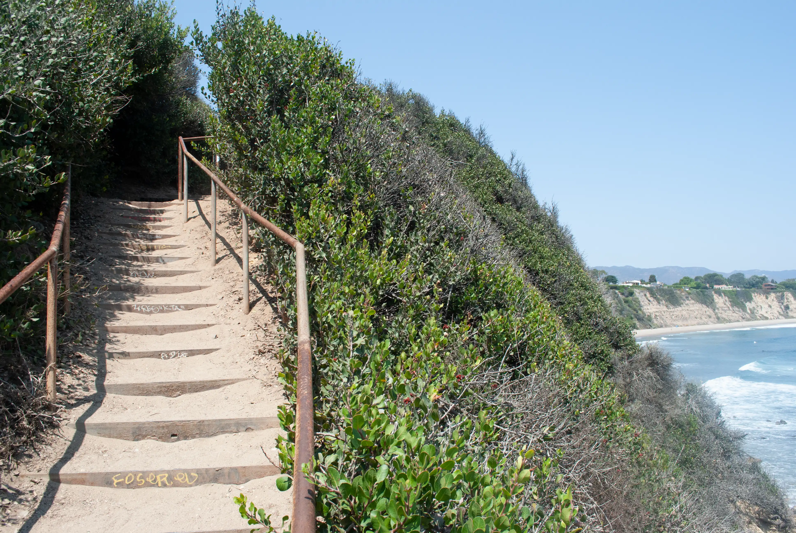
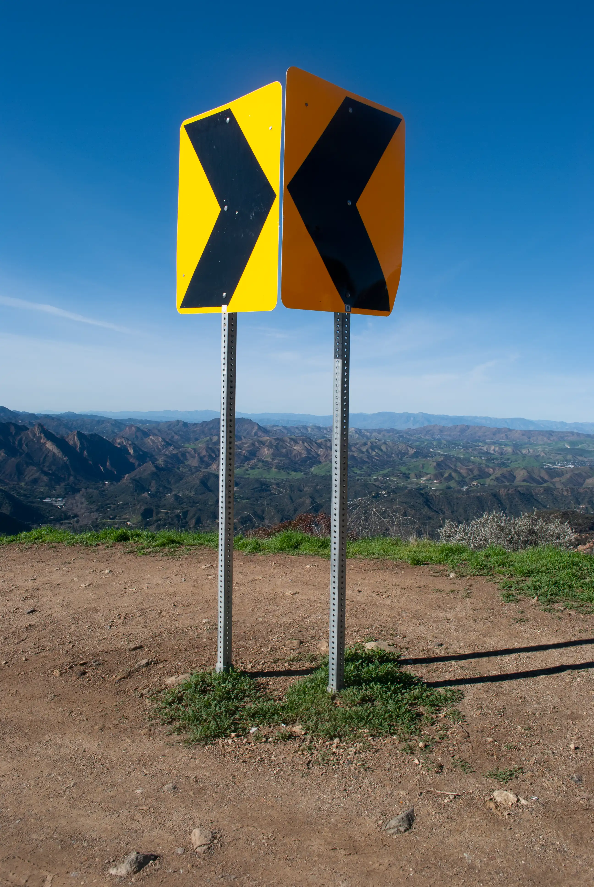
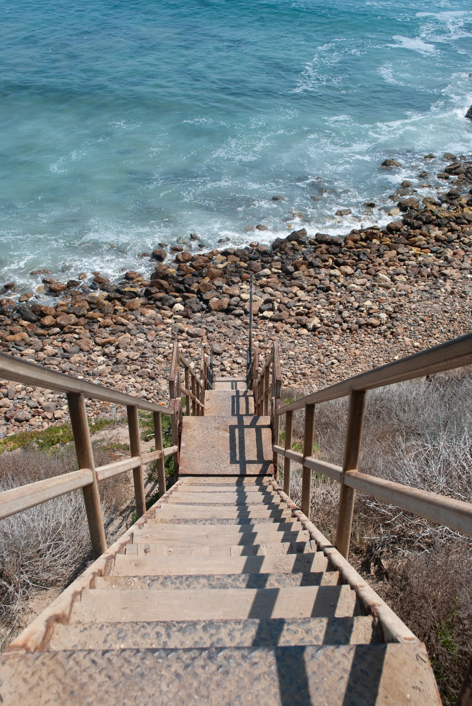
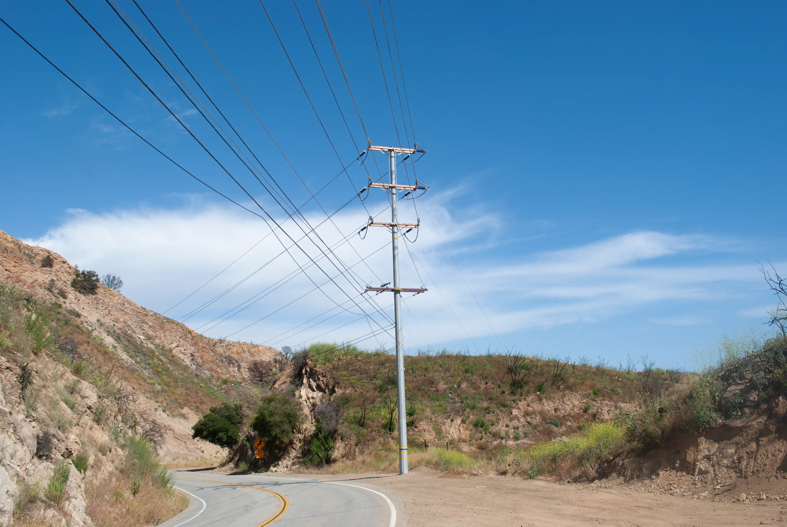
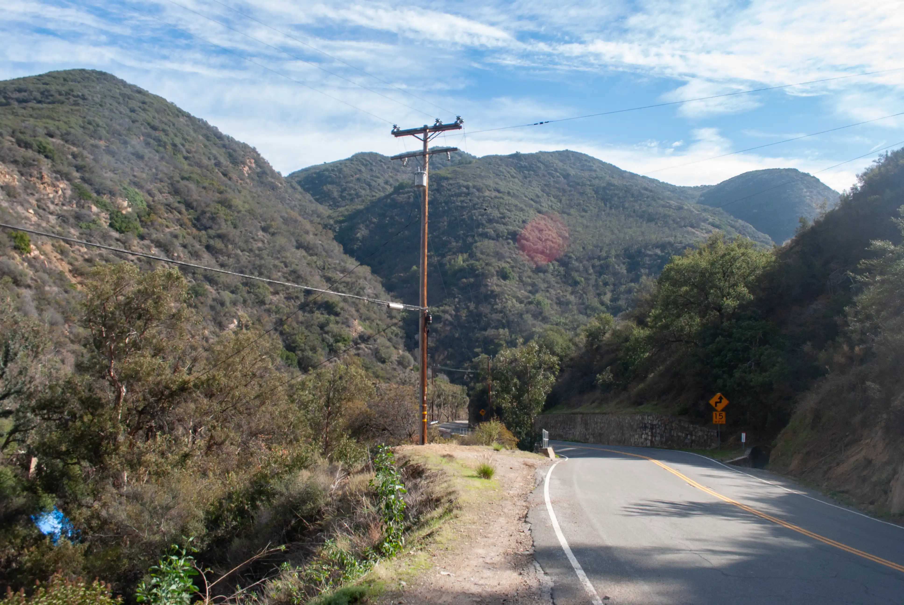
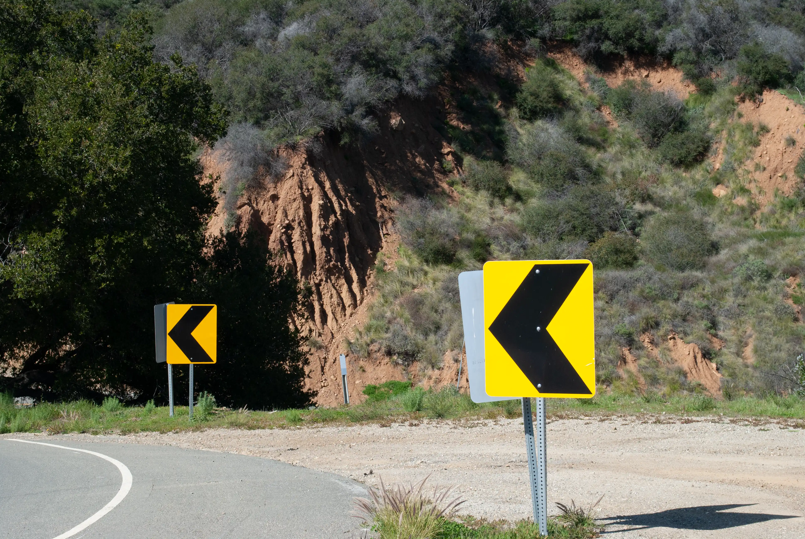

Stoppages and Surfaces are copyright Alexander Naylor and can only be used with permission. They are also available in postcard form or as prints with a maximum long axis of 40 cm. Please contact me here for more information or additional photos.
Marcel Duchamp used the word “stoppage” to describe flowing lines created by chance (as in the Three standard stoppages—a joke aimed at the Bureau international des poids et mesures—or the Network of stoppages). I certainly have a lot more faith in science and measurement than Duchamp, but stoppage a nice, succinct word to describe a lot of what I see in Malibu—paths made by humans that are either forced to embrace or act against the preexisting landscape, itself built by chance erosional events over millions of years, with roadsigns mediating between the two.
     